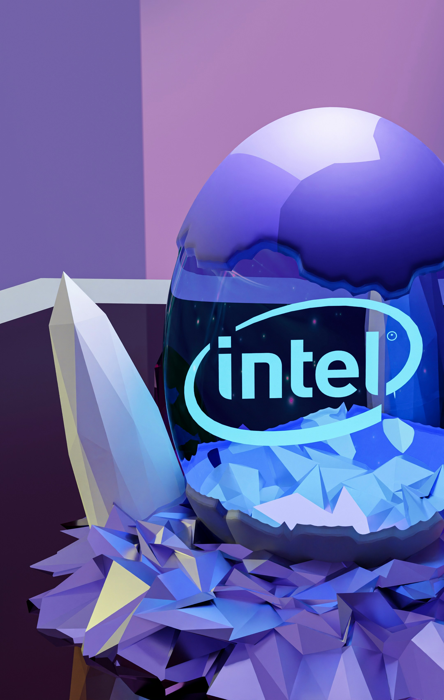

1968
Intel Founded

Robert Noyce and Gordon Moore rename NM Electronics to Intel Corporation, laying the foundation for decades of technological innovation.
Explore Intel's journey through time, discovering how our commitment to innovation has shaped a more sustainable future for technology and our planet.
Robert Noyce and Gordon Moore rename NM Electronics to Intel Corporation, laying the foundation for decades of technological innovation.

Intel debuts the 4004, the world's first commercial microprocessor, igniting the microprocessor revolution.

Launch of the 8086 processor, establishing the x86 architecture that drives countless PCs and servers.

Intel introduces the 386 processor with 32-bit architecture, ushering in a new era of performance and multitasking.

This year marks Intel's highest annual greenhouse gas emissions for operations; subsequent investments reduced emissions.

Intel launches its RISE strategy and 2030 goals, aiming to drive progress on climate action, water stewardship, and waste reduction.

Intel commits to achieve net-zero greenhouse gas emissions (Scope 1 and 2) across global operations by 2040.

Intel achieves 99% renewable electricity usage worldwide, lowering carbon emissions and advancing sustainability goals.

Intel hosts a Sustainability Summit uniting suppliers, government officials, and industry leaders to collaborate on next-generation sustainable manufacturing.
Scroll to view timeline | Hover over cards to learn more!